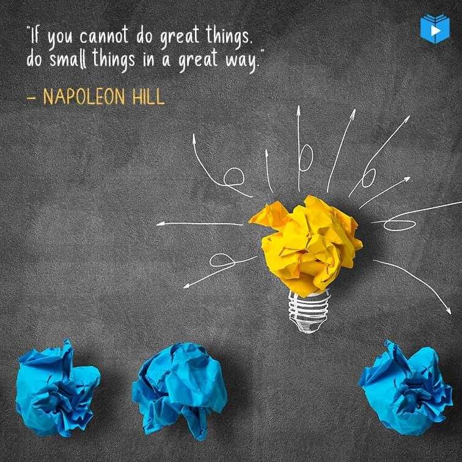
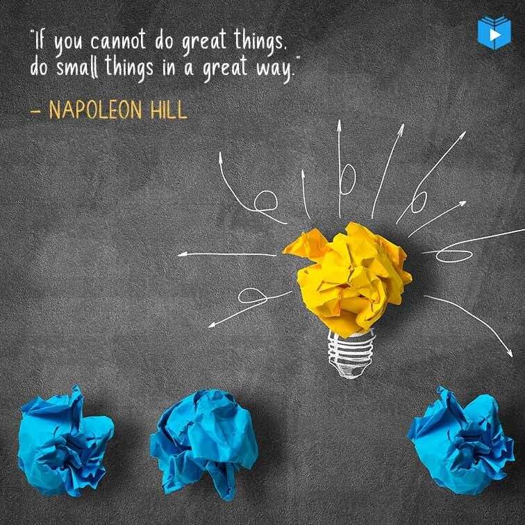
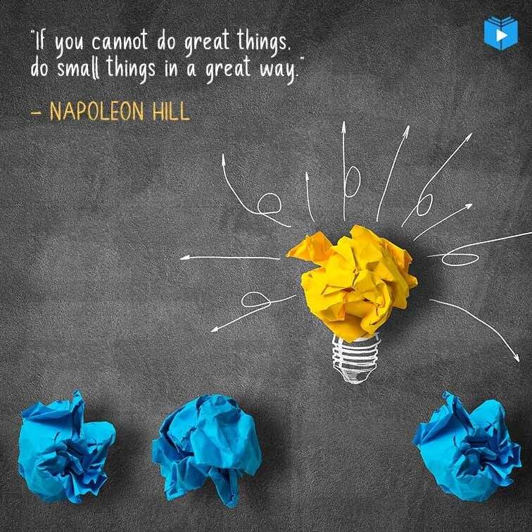

QUALITY OF EDUCATION
ABOUT US:
What we are doing:
Before you can expect learners to succeed academically, students should also
feel safe both mentally and physically. While most of the schools take physical
safety measures, not many learning platforms consider the mental safety of the
learners. So, we are making a website filled with motivational quotes,
meditation videos, inspirational stories about successful people, and more.
Students can access this when they feel demotivated or don’t feel like studying.
Names of team members:
1. Chinmayee
2. Sowrya
3. Sathvik
Meditation videos:
https://www.youtube.com/watch?v=8xqvw9ocerg
https://www.youtube.com/watch?v=qN5HN-cGzjE
https://www.youtube.com/watch?v=BNW9-1kHRk8
Motivational quotes:

Inspirational stories: Kentucky fried chicken: The real-life story of
Colonel Harland Sanders
who was disappointed umpteen times in his life and still made his dream come
true late in his life is really inspiring. He is a seventh grade drop out who
tried many ventures in life but tasted bitter every time. He started selling
chicken at the age of 40 but his dream of a restaurant was turned down many
times due to conflicts and wars. Later he attempted to franchise his restaurant.
His recipe got rejected 1,009 times before the final approval. And soon the
secret recipe, “Kentucky Fried Chicken” became a huge hit worldwide. KFC was
expanded globally and the company was sold for 2 million dollars and his face is
still celebrated in the logos.
Moral: Have you stopped your attempts at a venture just because you were rejected or failed a few times? Can you even accept a failure 1009 times? This story inspires everyone to try hard and believe in yourself until you see success despite how many times you have failed. Shark bait: A marine biologist put a shark into a big tank at the time of a research experiment. Followed by that, he released some tiny bait fishes into it.
Thoughts: This is a small notes page students can use as a diary and put in their thoughts or how they feel. Tracking progress: Schedule planner:
Motivational games: Charades. This simple but classic game is a great way to encourage your student to get out of their seats and participate in the lesson. Hangman. Scatter-gories. Bingo. Puzzles. Draw swords. Hot potato. Pictionary.
Motivational games:
Thoughts:
This is a small notes page students can use as a diary and put in their thoughts or how they feel.
Tracking progress:
Schedule planner:
Aims & Objectives
Aim: To support students for their mental health and increase their motivation
to study.
Objectives: To train the mind for overall development of personality. To acquaint the students with a deride level of knowledge information.